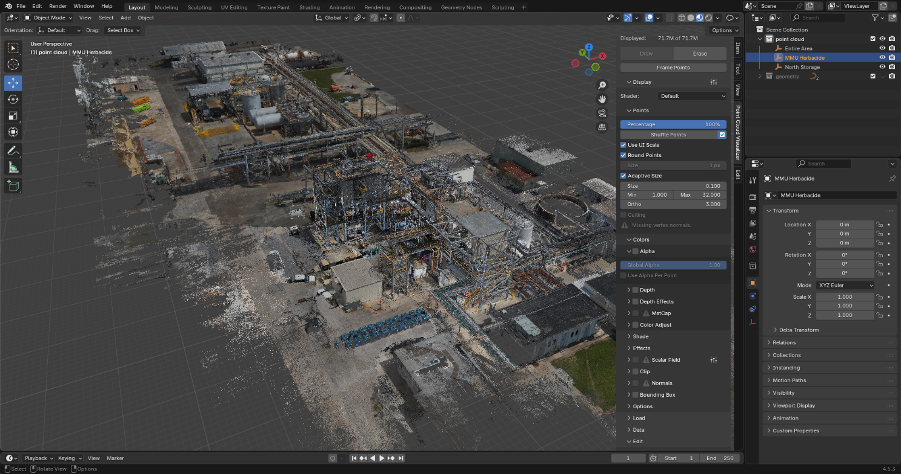
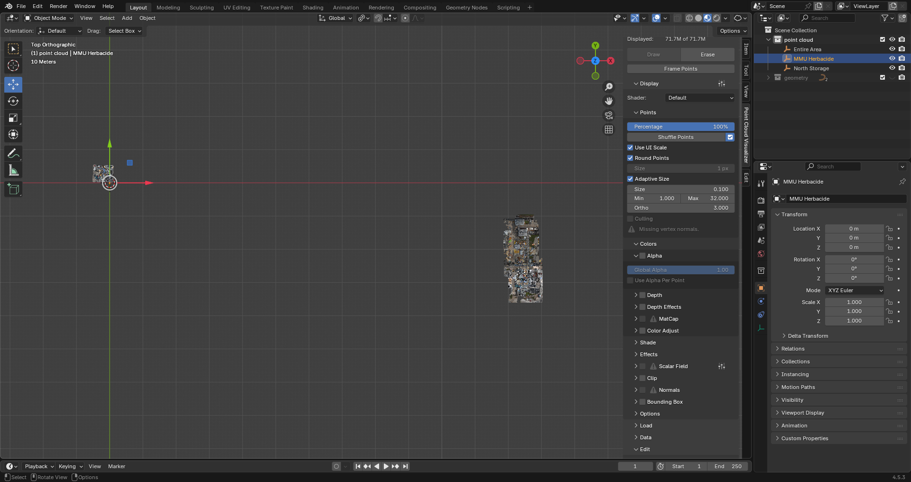
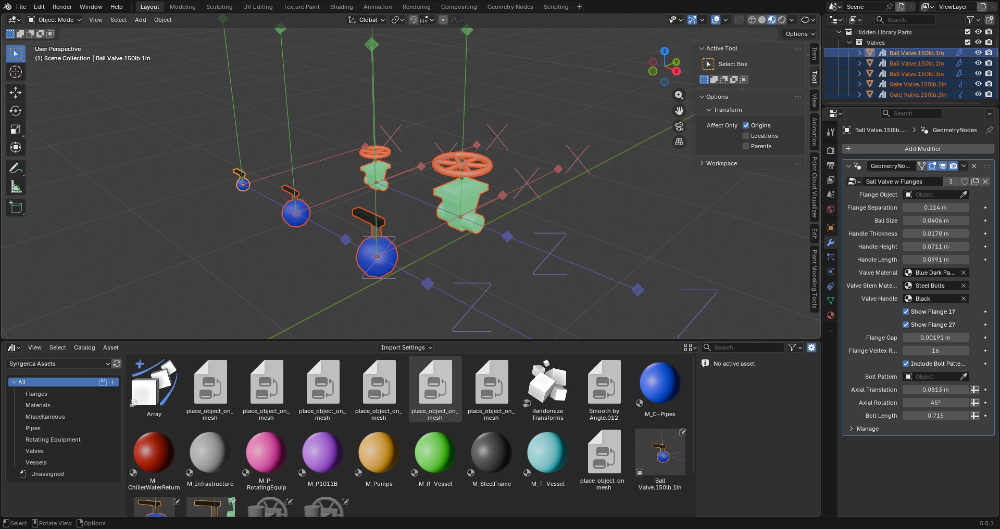
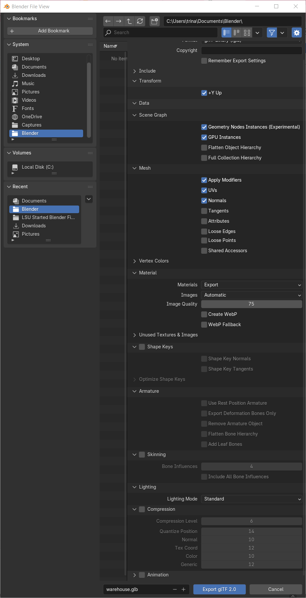
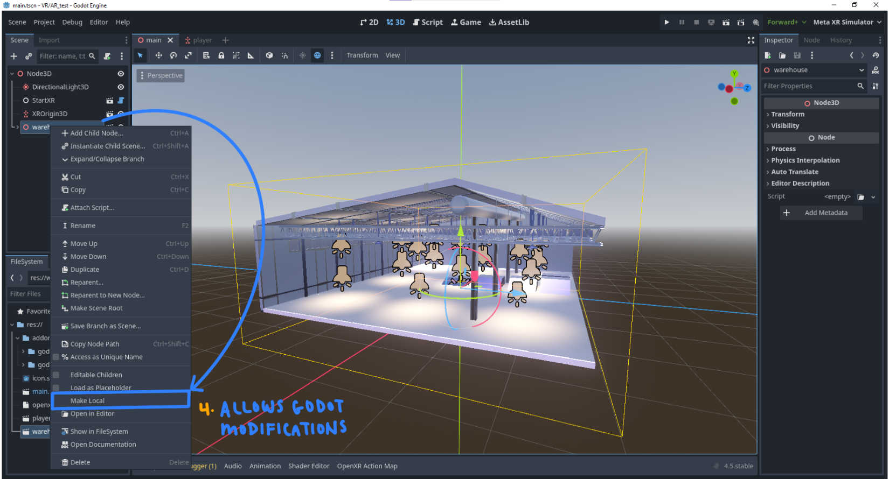
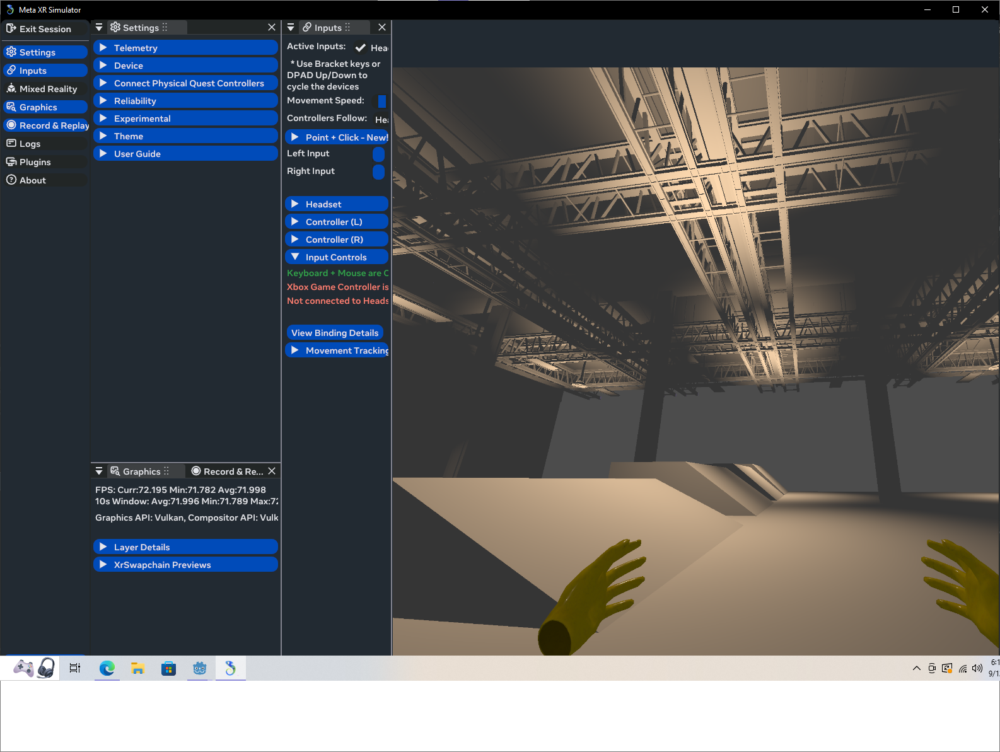
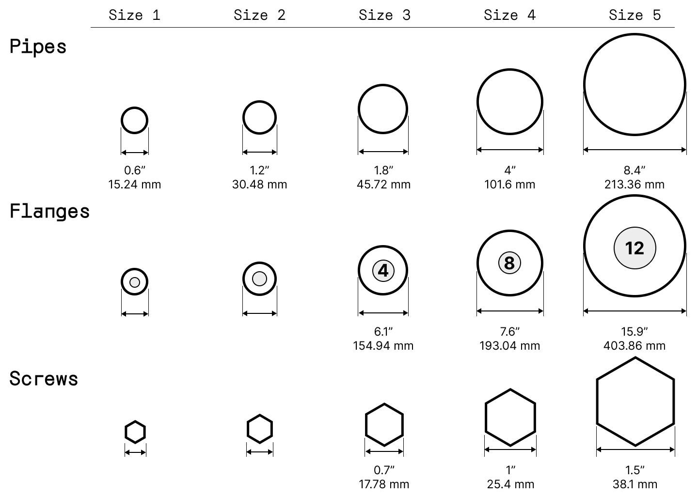

Agreaux Documentation
A simplified, accessible pipeline for building and deploying digital twins with open-source software — modelled in Blender, experienced in VR/AR through Godot.
Agreaux reframes digital-twin development as an approachable, reproducible system. The reference build presents the LSU distillation columns as an interactive VR/AR twin, demonstrating the whole workflow end-to-end. These docs are an overview of how the pieces fit together — the in-repo guides cover the step-by-step detail.
Quick start
The repository contains a complete Godot 4.6 project plus the Blender add-ons. To run the demo twin:
# 1 · Clone the repository
git clone https://github.com/lsudigitaltwinninglab/agreaux.git
- Install Godot 4.6 (the engine with Mobile/OpenXR support).
- Open the project — point Godot at the cloned folder and let it import.
- Press play to explore on desktop, or deploy to a Meta Quest 3 for VR/AR.
- For modeling, install the Point Cloud Visualizer and Plant Modeling Tools add-ons in Blender.
Architecture
Agreaux is a modular pipeline. Each stage uses free, open-source tools and hands a clean artifact to the next — from raw scans all the way to an interactive XR application.
flowchart LR
subgraph CAP["Capture"]
A1[Low-cost LiDAR scan]
A2[Photogrammetry / camera]
end
subgraph REG["Register"]
B1[CloudCompare / RealityScan]
B2[Scaled point cloud]
end
subgraph MOD["Model — Blender"]
C1[Point Cloud Visualizer]
C2[Plant Modeling Tools]
C3[Geometry Nodes + Asset Library]
end
subgraph ENG["Engine — Godot 4.6"]
D1[glTF / .blend import]
D2[XR + Multiplayer + UI]
end
XR[[VR / AR / Toy-model
on Meta Quest 3]]
A1 --> B1
A2 --> B1
B1 --> B2 --> C1
C1 --> C2 --> C3 --> D1 --> D2 --> XR
The point cloud is the spatial ground truth: models are built 1:1 over it so the digital twin matches the real facility's dimensions.
Capture & registration
Capture combines an accurate LiDAR reference with high-detail photography, then registers everything into a single scaled point cloud.
- Low-cost LiDAR scanners — affordable handhelds like the Eagle scanner give a true 1:1 laser reference; the framework isn't picky about the device.
- Photogrammetry from any camera (including a phone) adds detail — but must be scaled/aligned, since photogrammetry clouds aren't inherently to scale.
- CloudCompare / RealityScan line up overlapping registrations and export the merged point cloud.
- Control points — 3+ shared, easily-referable points (sharp corners work well) improve orientation, mapping and scale.
What carries into Blender for modeling: the point cloud(s), the diagram/blueprint layout, and camera positions (imported as FBX via Plant Modeling Tools).

Modeling in Blender
In Blender, the facility is rebuilt as clean, optimized, game-ready geometry on top of the reference cloud — using two custom add-ons and procedural Geometry Nodes.
Add-ons
- Point Cloud Visualizer — loads the scaled point cloud as a modeling guide so the model stays 1:1 with reality.
- Plant Modeling Tools — imports aligned camera positions and corrected photos for accurate reference while modeling.
- Geometry Nodes — procedural piping, cables and beams that export as instances, keeping the scene efficient for real-time engines.
Loading a point cloud
Both add-ons install from Edit → Preferences → Add-ons → Install from Disk
(point it at the downloaded .zip). To bring a cloud in:
- Clear the scene and add an Empty — the point cloud attaches to it.
- With the Empty selected, open the sidebar (
N) → Point Cloud Visualizer → load the.plyfrom disk and press Draw. - The cloud isn't saved inside the
.blend, so re-draw it after reopening the file.


Conventions
- Keep poly counts low and rely on instancing for repeated elements.
- Share materials and common objects through the Asset Library so the whole team stays consistent.
- Link key collections from individual files into a master file for assembly (see Team workflow).
- Keep the model clean and well-labeled — assets searchable by name, grouped by type/area for toggling.
Blender → Godot
Godot accepts several 3D formats; Agreaux favors glTF 2.0 (.glb) or working directly from .blend files (Godot calls Blender's glTF exporter, so saved changes flow through and play well with version control).
- Name suffixes — e.g.
-coladds collision to a mesh;-noimpexcludes it from import. - Low-poly + collision — ship a low-poly mesh for collision and a high-poly mesh for visuals; generating collision from dense geometry is too heavy.
- Draco compression — great for file size, but skip it where every vertex matters; realize instances and apply geometry-node modifiers before export.

+Y Up, Geometry Nodes/GPU instances, applied modifiers, and Draco compression where appropriate.
Godot & XR
The interactive twin is a Godot 4.6 project targeting Meta Quest 3 via OpenXR, built on Godot XR Tools and the Godot Meta Toolkit.
Display modes
The XR environment blend mode (Project Settings → XR) switches how the virtual world mixes with reality:
- Opaque — full VR; the render is presented fully opaque.
- Additive — AR where blending isn't controlled (e.g. additive optical displays).
- Alpha — true AR passthrough; combine with a transparent viewport so the alpha channel decides what's visible.
Toolkit
The Meta XR Simulator lets you test XR interactions on desktop without putting on a headset for every change.

Multiplayer & QR anchors
Multiple users share one session over Godot's high-level multiplayer (ENet). A host machine authors the truth and synchronizes state to clients via RPCs. A QR-code spatial anchor aligns everyone's model to the same physical spot.
Connection flow
flowchart TD
S[AutoLoad detects headset] -->|VR| V[Load VR scene]
S -->|no headset| D[Load desktop scene]
V --> L[2D lobby]
D --> L
L -->|Host| H["create_server() → load arena"]
L -->|Join| C["create_client() → load arena"]
H --> M[Multiplayer scene base]
C --> M
M --> P[Peers exchange avatars + state via RPC]
QR spatial-anchor sync
flowchart LR
Q[Quest camera reads QR] --> T[OpenXR marker tracker]
T --> X[XRServer emits tracker_added]
X --> MM[QR marker manager]
MM --> AN[XRAnchor3D tracks pose]
AN --> SM[Model sync manager]
SM -->|RPC to all peers| ALL[Everyone shares one aligned model]
Spatial anchors let the model stay locked to the real room, and the same anchor keeps every co-located participant's view aligned. RPCs also sync avatars, anchor mode, scale and menu state so the scene stays consistent across peers.
P&ID & interactions
The twin is interactive, with tools aimed at review and training.
- P&ID with pointers — display diagrams in-world; pointer hotspots reveal linked metadata and highlight matching equipment.
- Toy-model mode — shrink the whole unit onto a tabletop, or expand back to 1:1.
- Movement — walkable ramps and ladder movement to traverse the unit naturally.
- Drawing — sketch annotations and comments directly in 3D space.
- Metadata — a metadata manager surfaces equipment info on point-and-click.
Team workflow
Agreaux is built for small teams working in parallel. Source control plus Blender's linking and asset systems keep everyone consistent.
flowchart TD PV[Perforce — source control] PV --> IF[Individual .blend files] IF --> AL[Shared Asset Library
materials + common objects] AL --> GN[Geometry-node assets] IF -->|link main collections| MF[Master .blend file] GN --> MF MF -->|export glTF / .blend| GD[Godot project on GitHub]
- Perforce handles large binary Blender files and shared access.
- Asset Library shares materials and common objects so the model stays uniform.
- Linking assembles individual files into a master file without duplicating data.
- The Godot side lives on GitHub for code-friendly version control.

Repo structure
A high-level look at what's in the repository:
addons/— Godot plugins (XR Tools, Meta Toolkit, OpenXR vendors, XR avatar, LAN discovery).scripts/— gameplay & feature logic (metadata, P&ID, toy-model, world scale, movement).scenes/,ui/,instances/— scene composition, interface and reusable nodes.BlenderImports/— model imports from the Blender pipeline.docs/— in-repo notes (e.g. iOS/XR transferability).*.tscn— entry scenes such as the AR multiplayer setup and P&ID drawings.
FAQ
Do I need expensive scanning equipment?
No. The framework is built around low-cost LiDAR scanners — affordable handhelds like the Eagle scanner — and detail can be filled in with photogrammetry from any camera, even a phone.
Is the toolchain really open-source?
The core — Blender, Godot, CloudCompare, OpenXR — is free and open-source. The licensing for Agreaux itself is still being finalized.
Which headset is supported?
The reference build targets the Meta Quest 3 via OpenXR. XR Tools abstractions can port to other OpenXR devices with some platform-specific adjustments.
What engine version do I need?
Godot 4.6 (with Mobile/OpenXR support). For modeling, Blender 3.5+ from blender.org.
Credits & license
Agreaux is developed by the LSU Digital Twinning Lab within the Digital Media Arts & Engineering program, with student researchers driving asset production, XR development, interaction design and documentation.
Agreaux is an open-source project. The specific license structure is still being decided — details will be announced here once finalized.
Open the repository